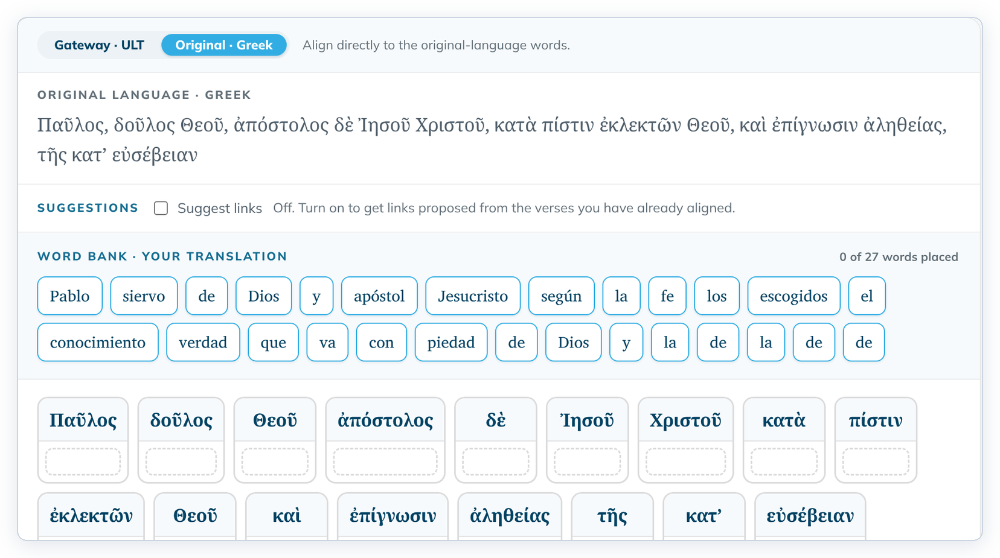

Align to the gateway text or the original language
Align to the gateway words you can read (which already carry the link to the original), or directly to the Greek or Hebrew words.
Either way, the saved links point to the original language.
Steps
- In Align, open a verse.
- Click Gateway · ULT or Original · Greek. An Old Testament book shows Original · Hebrew.


- Link the words as usual. See Link your words to the source.
Which to choose
- Gateway · ULT: "Align to the gateway text you can read — its words already carry the original-language alignment." Easier if you don't read Greek or Hebrew. A card can hold a gateway phrase, such as "of the chosen people" over ἐκλεκτῶν.
- Original · Greek or Original · Hebrew: "Align directly to the original-language words." The cards show only the original words.
Words you already placed stay where they are when you switch.
If the gateway text for a verse has no alignment data, gateway mode says "The gateway lens needs the gateway source text with alignment data for this verse." Use the original-language mode instead.